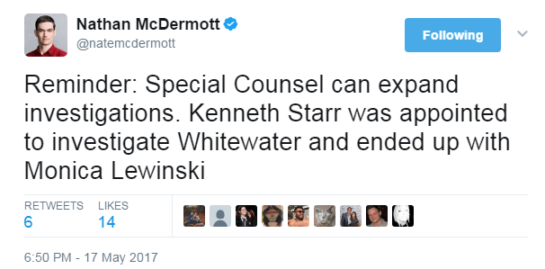

This account syndicates news from other media outlets.


Deputy Attorney General Rod Rosenstein installed George W. Bush-appointed ex-FBI Director Robert Mueller as special counsel Wednesday to oversee the FBI’s investigation of Russian interference in the 2016 presidential election.
Because Attorney General Jeff Sessions previously recused himself from the investigation, Rosenstein is acting Attorney General, with all the powers that entails, for purposes of the Russia probe. As such, Rosenstein has full authority to unilaterally pass responsibility off to Mueller, who will continue the already months-long investigation without reporting through the normal FBI and DOJ chain-of-command.
Rosenstein’s decision came after Washington exploded into speculation Tuesday over the New York Times report that a “Comey Memo” showed that President Donald Trump had suggested in a private conversation that now-ex-FBI Director James Comey “let it go” with regard to now-fired National Security Advisor Michael Flynn.

Rosenstein explained in the press release accompanying the appointment that “unique circumstances” led to his determination that the appointment of a special counsel was in the public interest:
My decision is not a finding that crimes have been committed or that any prosecution is warranted. I have made no such determination. What I have determined is that based upon the unique circumstances, the public interest requires me to place this investigation under the authority of a person who exercises a degree of independence from the normal chain of command.
Mueller served a full 10 year term as head of the FBI under both Presidents Bush and Barack Obama, in the immediate aftermath of the September 11th attacks. Click here to read the entire article.
Democratic strategists are racing to figure out whether it’s politically wise to call for President Donald Trump’s impeachment, as one bombshell revelation after another about his ties to Russia is forcing candidates for the Senate and House of Representatives to consider the question far sooner than anyone had expected.
In a significant development, party operatives say they expect Democrats to poll-test the public’s views on impeachment, trying to acquire hard data about an issue that until now has not been seriously analyzed. Other strategists say that candidates and party organizations will begin conducting focus groups on the question.
These operatives acknowledge they’ve been caught off guard by the speed with which impeachment has become a relevant issue – and are wary of the political damage it could cause if not handled correctly.
Even 10 days ago, before Trump fired FBI Director James Comey, few party officials had even considered such a dramatic move, which has happened only twice in American history.
“I mean, Jesus, it’s not even Memorial Day!” said one Democratic operative.
Only after testing the question with voters will the party have a firmer sense of how it should act. Click here to read the entire article.
Don’t Miss: Trump Vs. The Deep State: The War For America’s Soul